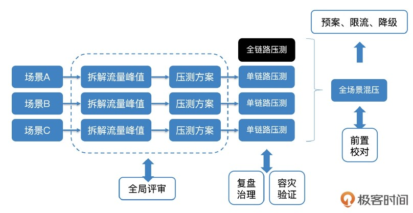
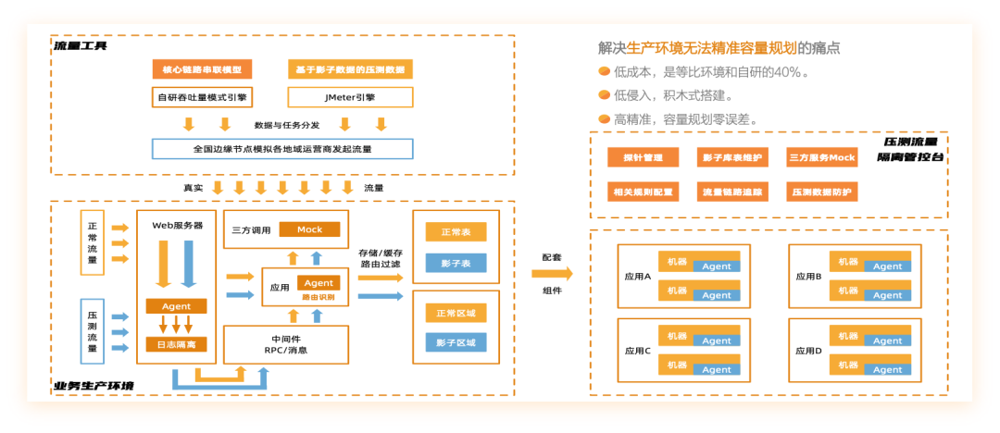

容量保障Overview[2] #

容量预测 #
容量预测[1] #
-
我首先给出了**“皮尔逊相关系数”**这个工具，对服务 TPS 和 CPU 利用率之间的相关度进 行了定量分析，根据相关度的强弱，分别采取不同策略。其中，重点讲到了在两者弱相关 时的应对策略，如果能够穷举出尽可能多的相关特征，可以通过特征选取的方式对服务进 行画像，提升预测准确率；如果特征非常难找，那么可以依靠概率表的方式曲线救国。
-
随着服务不断迭代，容量也在不断变化，我与你分析的第二个问题，就是如何平衡好服务 迭代和容量预测频率的关系。根据服务发布窗口（或其他变更时间点）建立滑动窗口机 制，既保证了在服务变更后能够尽快地更新模型，又不至于带来大量的计算量，是一个不 错的实践方式。
-
业务场景变化也会导致容量变化，针对这个问题，我结合之前提到的全链路压测工作，通 过建立全链路压测和容量预测双向校准的机制，提前对变化的业务场景进行预测，识别容 量风险。
全链路压测 #
核心功能[4] #

压测-部署架构 #
-
施压机的分布[3]
- 大部分仍然是跟线上系统在同机房内，少量会在公有云节点上
- 以将全球（主要是国内）的 CDN 节点作为施压机
- 更加真实地模拟真实用户从全球节点进入的真实访问流量
- 成本过高，技术条件和细节难
-
压测的读写流量[3]
- 读流量
- 写流量
- 对压测的写请求做专门的标记。
- 当请求要写数据库时，由分布式数据库的中间件框架中的逻辑来判断这个请求是否是压测请求，如果是压测写请求则路由到对应的影子库中，而不是直接写到线上正式的库中。
改造 全链路压测[5] #
- 数据隔离 物理隔离 vs. 逻辑隔离 [见表1]
- 中间件改造 eg. MQ改造 Producer: 判断请求带压测标识，转换到数据体（msg）中 Consumer: 判断数据（msg）中有压测标识， 恢复压测标识至请求中
- 应用服务改造
- 绕开限制逻辑
- 数据隔离前置
- Mock 逻辑
表1 逻辑隔离 vs. 物理隔离
| 隔离类型 | 逻辑隔离 | 物理隔离 |
|---|---|---|
| 中间件改造 | 小，几乎不需要改造 | 大，需要保证压测流量标识能一路透传不丢失 |
| 业务侵入性 | 大，会影响表结构设计 | 小， 对数据实体没有侵入 |
| 数据清洗难度 | 大， 需根据每个数据实体的标识单独定制清洗规则 | 小，压测数据都在影子表 |
| 可扩展性 | 弱， 新数据实体均需要设计新的压测标识 | 强， 流量标识为统一形式， 且与数据无关 |
| 安全性 | 弱， 与真实数据写入同一张表， 一旦隔离逻辑有疏漏， 会影响真实用户 | 强， 与真实数据分开存储， 即便考虑不周 ，也不会影响真实数据 |
参考 #
- 《09 | 容量预测（下）：为不同服务“画像”，提升容量预测准确性》 吴骏龙
- 《 13 | 大促容量保障体系建设：怎样做好大促活动的容量保障工作（下）》 吴骏龙
- 稳定性实践：容量规划之压测系统建设 极客时间？
- 全链路压测体系建设方案的思考与实践 阿里 ***
- 《05 | 全链路压测：系统整体容量保障的“核武器”（上）》 吴骏龙